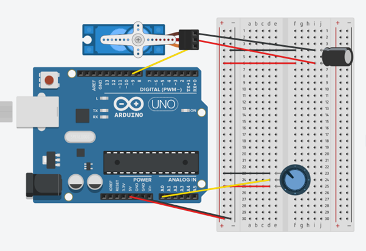

This week, my main goal/objective was to make sure that the joysticks worked and that I could write them
to control things like the positioning of a servo. I didn't just want to read an analog pin to detect
where the joystick was. I designed a circuit that allowed me to try different setups and added some
feedback to see how the joystick changed the servo's movement. This helped me learn more about
electronics and showed me the importance of precise control in robotics. By the end of the week, I got
the servo to respond smoothly to the joystick's position, which felt like a big win for my project.

Python
#include // Include the Servo library
Servo myServo; // Create a Servo object
const int potPin = A0; // Potentiometer connected to analog pin A0
void setup() {
myServo.attach(9); // Attach the servo to digital pin 9
Serial.begin(9600); // Start serial communication (optional, for debugging)
}
void loop() {
int potValue = analogRead(potPin); // Read the potentiometer value (0 to 1023)
Serial.print("Potentiometer Value: ");
Serial.println(potValue);
// Map the potentiometer value to servo angles (0 to 180 degrees)
int servoAngle = map(potValue, 0, 1023, 0, 180);
Serial.print("Servo Angle: ");
Serial.println(servoAngle);
myServo.write(servoAngle); // Set the servo's angle
delay(15); // Small delay for stability
}
I created the code and diagram above this week to understand better coding with Arduino and how servos
work. The circuit above shows the components of a servo, Arduino Uno, breadboard, potentiometer, and
capacitor. The objective of the circuit was to ensure that when I moved the joystick left and right, the
servo would respond accordingly. This setup is what I plan to use in the final version of the plane,
where the servos will move based on the joystick's input. The only difference is that the same Arduino
controls the servo and the joystick in this example. In the final version, however, the controller and
the servos will be managed by separate Arduinos. For this to work, I will also need a transmitter and a
receiver, but I will take care of that later. I used a potentiometer in the diagram because each
joystick contains two potentiometers that detect movements along the x and y axes. I only need one
potentiometer to see if the joystick moves left and right.
The servo has three pins: a power ground and a signal. You can tell the Arduino to tell the servo to turn
to a certain degree; the Arduino communicates this. The Arduino sends a PWM (pulse width modulation)
signal to the servo. The pulse duration determines the angle to which the servo will turn. For example,
a pulse of 1.5 milliseconds might correspond to the servo centre position ( usually 90 degrees), while
shorter or longer pulses could move it to different positions. This signal is given to the servo with
the yellow cable shown in the diagram. Within the diagram, I used a capacitor with the servo; However,
it is not always necessary to add a capacitor with a servo; adding them can improve the reliability and
performance of the servo, especially in more complex setups where power supply variation can impact
operation this can. I want to make the servo move smoothly without much interference.
This week's project helped me improve my skills in electronics and programming. I learned how important
it is for hardware and software to work well together while building circuits. I faced challenges like
ensuring all the connections were secure and fixing issues when things didn’t work. One simple mistake I
encountered was putting the servo in the wrong pin on my Arduino. I solved these problems by
double-checking everything and looking for help online. Creating a more complex circuit instead of just
reading an analog pin helped me understand how the parts of the circuit worked together> the joystick's
ability to change resistance made it easier to control the servo smoothly. Adding feedback helped me see
how the servo responded and showed me the value of testing things out in future projects. I want to try
adding more sensors and possibly using wire.